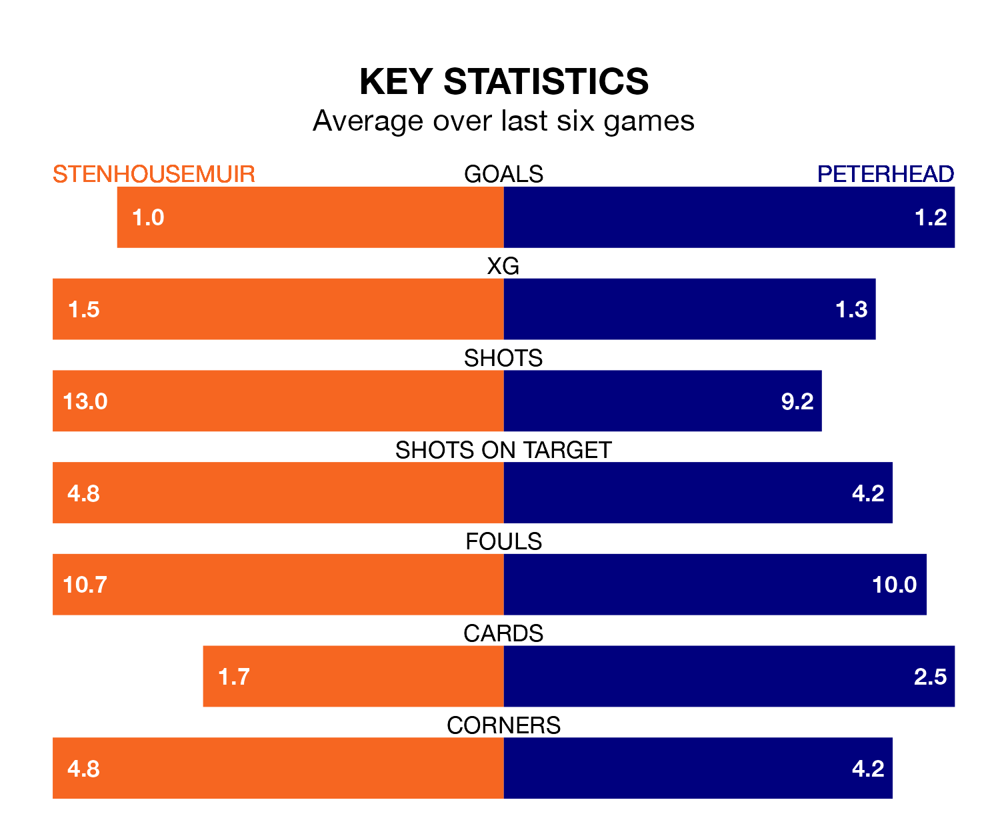

League Two's top two sides face each other at Ochilview Park in Saturday's kick-off, when Stenhousemuir host second-placed Peterhead.
Stenhousemuir have picked up 18 wins and eight draws from 29 games so far this season, and sit 15 points above the visitors going into the 3pm match.
The Blue Toon, meanwhile, have won 13 and drawn eight, picking up 47 points.
With 46 goals in 29 games so far this season, Stenhousemuir are the league's second-highest scorers with 1.6 goals per game. And they are conceding fewer than average, letting in 25 goals at a rate of 0.9 per game.
Peterhead are also above average scorers, with 1.6 goals per game, compared to a league average of 1.3. They have conceded 1.1 goals per game.
In Darren Jamieson, the Warriors can rely on one of the league's safest pair of hands. He has kept 16 clean sheets in his 29 appearances this season, and no 'keeper has prevented the opposition scoring more often in League Two.
In the Blue Toon's net, Stuart McKenzie has six clean sheets in 28 games. He has conceded a goal every 81 minutes, 40% more often than the 113 minutes between goals for Darren Jamieson.
In the last 10 years, Stenhousemuir and Peterhead have played each other on 21 occasions. Stenhousemuir won 10 of them, Peterhead eight, and they drew three times.
On average, the Warriors scored 1.5 goals and the Blue Toon 1.7 in those matches.
Their last meeting was on January 27, when Peterhead won 2-1 at home.
The home side are in mixed form in League Two, with one win and four draws from their last six games.
And also with a win and four draws over that period, the visitors' form is identical – they have both taken seven points from 18.
Stenhousemuir's last match was on March 16, a 1-1 draw against Forfar Athletic, with James Berry getting the goal for the Warriors.
Peterhead drew 1-1 with East Fife last time out, also on March 16, with Peter Pawlett on the scoresheet.
Saturday's match will be refereed by Duncan Williams, who has taken charge of 10 League Two games so far this season, issuing three red cards and booking 48 players. He has awarded four penalties.
The last Stenhousemuir game Williams refereed was a 2-2 away draw with Elgin City on February 17. His last Peterhead match was their 1-1 draw away at Clyde on February 3.
Updated: 10:19 (UTC), 22/03/24